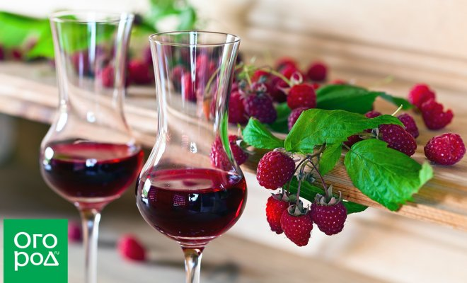
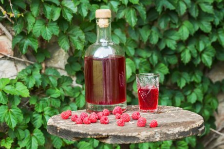
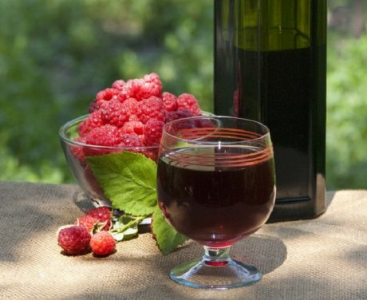
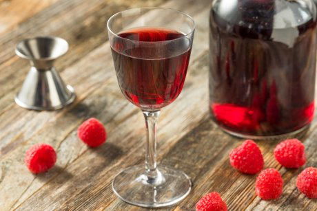
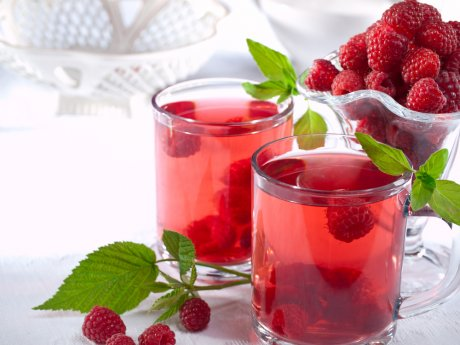
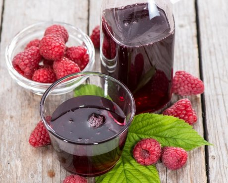
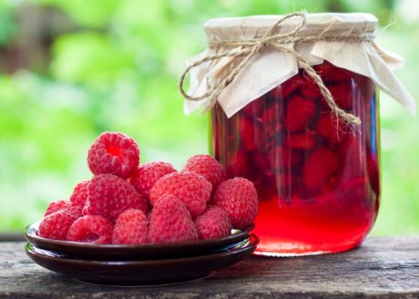

Многие садоводы наловчились изготавливать в домашних условиях отличные вина, настойки и ликеры на основе плодов и ягод с собственного загородного участка. Если вы пока ни разу не пробовали заняться этим процессом, но когда-нибудь мечтаете его освоить – почему бы не сделать это уже в нынешнем сезоне?
Мы уже рассказывали вам об оборудовании начинающего винодела и об основных правилах и хитростях домашнего виноделия – предлагаем освежить эти материалы в памяти.
А сейчас вашему вниманию – несколько проверенных рецептов алкогольных напитков из малины – как самых простых, так и достаточно необычных. Попробуйте приготовить, ведь спиртное на основе этой ягоды отличается не только необыкновенно нарядным цветом, но и высокими вкусовыми качествами. А сладкий малиновый аромат, который ни с чем не перепутать, подарит вам воспоминания о лете даже в самые промозглые зимние или осенние вечера.
Некоторые даже утверждают, что такие напитки в умеренных дозах обладают лечебными свойствами, не хуже чем свежая ягода! Этого мы утверждать не беремся, но то, что все представленные рецепты очень вкусны – гарантируем.
Простое вино из малины без дрожжей

Вам понадобятся: 2 кг ягод спелой малины, 0,7 кг сахара, 2 л воды.
Приготовление. Ягоды вручную очистите от листиков и мусора, но не мойте! Поместите их в большую емкость и аккуратно тщательно разомните деревянной скалкой, чтобы те пустили сок.
Из сахара с водой сварите сироп – варится примерно 5 минут после закипания на небольшом огне при постоянном помешивании. Снимите с плиты, остудите.
Ягоды поместите в стеклянную емкость и залейте остывшим сиропом. Емкость закройте гидрозатвором (можно плотно надеть на горлышко резиновую перчатку) и отправляйте бродить около двух недель в темное теплое место.
После завершения брожения сцедите вино через марлю, не взбалтывая осадок (снимите с осадка), плотно закройте крышкой и отправьте в прохладное место еще на неделю.
Затем снова снимите вино с осадка, процедите и разлейте в бутылки для хранения.
Домашнее крепленое вино из малины

Вам понадобятся: 2,5 кг ягод спелой малины, 0,5 кг сахара, 1 л воды, 200 мл пищевого неразбавленного спирта.
Приготовление. Ягоды вручную очистите от листиков и мусора, но не мойте! Разомните их в большой емкости деревянной ложкой или скалкой, а затем отожмите сок через несколько слоев марли.
К отжатой массе ягод добавьте 0,5 л воды и оставьте еще на 4-6 часов, чтобы вода "вытащила" из жмыха оставшиеся вкусные и полезные составляющие. После этого снова отожмите содержимое.
Сок от первой процедуры и воду от второй смешайте, добавьте еще 0,5 л воды и 150 г сахара. Получившуюся массу отправьте бродить под гидрозатвор в теплое темное место на неделю.
После этого снова добавьте в жидкость сахара – из расчета 150 г на каждый литр готовящегося вина – и опять отправьте под гидрозатвор.
Сахар в готовящееся вино лучше добавлять таким способом: слейте 50 мл бродящей жидкости, разведите в ней сахар, готовый сироп вылейте в общую емкость и снова закройте перчаткой (затвором).
По окончании брожения снимите вино с осадка и в получившийся продукт добавьте спирт из расчета 50 мл на каждый литр готовящегося вина.
После этого оставьте вино дозревать на 1-2 месяца в прохладном темном месте.
Малиновое вино со смородиной

Вам понадобятся: 1 кг ягод спелой малины, 1 кг ягод черной или красной смородины, 1,5-2 кг сахара, 2 л воды.
Приготовление. Ягоды вручную очистите от листиков и мусора, но не мойте!
На дно крупной стеклянной емкости с нешироким горлом засыпьте малину, добавьте поверх ягоды четверть заготовленного объема сахара и оставьте ягоды в бутыли бродить 4-5 дней на солнце.
После этого разомните ягоды смородины, чтобы пустили сок, и отправьте их в емкость к малине, опять же засыпав поверху еще четверть от общего заготовленного изначально объема сахара.
Добавьте воду до "плеч" бутыли и аккуратно размешайте содержимое – можно деревянной ложкой, лопаточкой из нержавейки или просто чистыми руками. Отправляйте емкость со всем содержимым бродить под гидрозатвор на 10-14 дней в светлом теплом месте.
После этого добавьте весь оставшийся сахар, снова перемешайте и закройте гидрозатвором.
После окончания брожения снимите молодое вино с осадка, разлейте по бутылям и оставьте дозревать уже без гидрозатвора. Через 2-4 дня может понадобиться вторая процедура снятия с осадка, после чего разлейте вино по бутылям и отправьте на 3-4 месяца в темное прохладное место.
Вино из забродившей малины

Вам понадобятся: забродившие ягоды малины (малинового варенья, малинового компота), сахар, вода.
Приготовление. Последовательность приготовления малинового вина из забродившего сырья практически ничем не отличается от вышеописанного из свежих ягод – просто процесс брожения уже запущен без вашего участия, и в сырье уже зачастую имеется сахар, что нужно учитывать, представляя себе вкус окончательного продукта.
Ягодную массу точно так же разбавляют водой, при необходимости добавляют сахар, и все содержимое дображивается в большой емкости под гидрозатвором в теплом месте.
По окончании брожения снимите вино с осадка, по желанию добавьте еще некоторое количество сахара, размешайте, разлейте по бутылям и отправляйте дозревать в прохладное темное место еще на 2-3 месяца.
Простой ликер из малины на коньяке

Вам понадобятся: 0,5 кг ягод спелой малины, 0,5 кг сахара, 1 л коньяка (бренди), 0,5 л воды.
Приготовление. Свежие ягоды очистите от мусора, промойте, засыпьте в стеклянную емкость с широким горлышком и залейте коньяком. Завяжите горлышко марлей и оставьте напиток настаиваться в теплом светлом месте 3-4 недели.
По истечении этого срока из сахара с водой сварите сироп – варится примерно 5 минут после закипания на небольшом огне при постоянном помешивании. Снимите с плиты, остудите и добавьте в емкость с настойкой.
Полученную жидкость процедите и отожмите через несколько слоев марли, затем отфильтруйте ее от оставшейся мякоти и разлейте по бутылкам для хранения.
Настойка из малины на водке

Вам понадобятся: 1 кг ягод спелой малины (можно замороженной), 0,5 кг сахара, 1 л водки.
Приготовление. Свежие ягоды очистите от мусора, промойте (если малина замороженная, ее даже можно не размораживать).
Поместите ягоды в трехлитровую стеклянную емкость, добавьте водку и сахар, перемешайте. Закройте емкость крышкой и оставьте настаиваться в темном сухом помещении 2-4 недели, ежедневно взбалтывая содержимое.
По истечении срока настоявшуюся малиновую настойку разлейте по бутылям для хранения.
Возможно, вас также заинтересуют следующие материалы на схожую тематику.